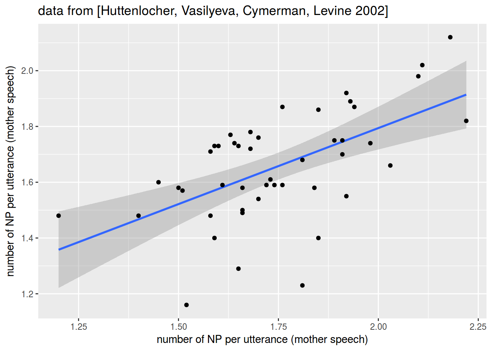
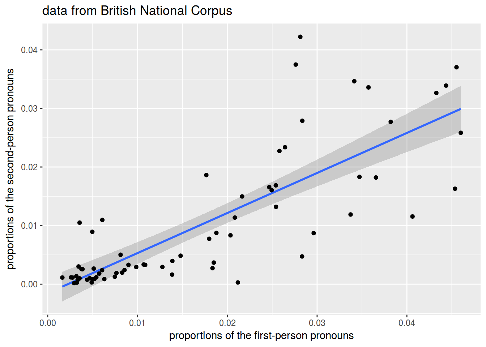
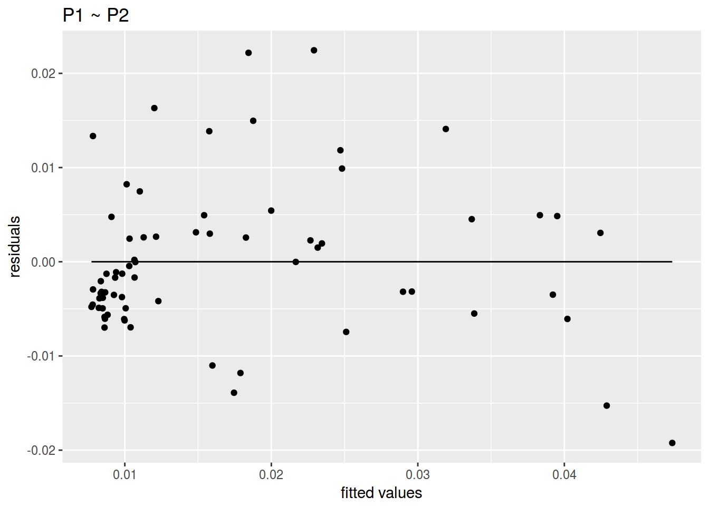

Lab 6.
0. Data
library(tidyverse)
np_acquisition <- read_csv("https://goo.gl/DhpmLe")
bnc_pron <- read_csv("https://goo.gl/vt1HCc")1.1
np_acquisition %>%
ggplot(aes(mother, child))+
geom_smooth(method = "lm")+
geom_point()+
labs(x = "number of NP per utterance (mother speech)",
y = "number of NP per utterance (child speech)",
title = "data from [Huttenlocher, Vasilyeva, Cymerman, Levine 2002]")
1.2
bnc_pron %>%
ggplot(aes(P1, P2))+
geom_smooth(method = "lm")+
geom_point()+
labs(x = "proportions of the first-person pronouns",
y = "proportions of the second-person pronouns",
title = "data from British National Corpus")
2.1
# base R
cor(np_acquisition$child, np_acquisition$mother)## [1] 0.5761599# tidyverse
np_acquisition %>%
summarise(cor = cor(child, mother))2.2
# base R
cor(bnc_pron$P1, bnc_pron$P2)## [1] 0.8028283# tidyverse
bnc_pron %>%
summarise(cor = cor(P1, P2))3.1, 4.1
acq_fit <- lm(child ~ mother, data = np_acquisition)
summary(acq_fit)##
## Call:
## lm(formula = child ~ mother, data = np_acquisition)
##
## Residuals:
## Min 1Q Median 3Q Max
## -0.46058 -0.08925 0.01071 0.13333 0.22770
##
## Coefficients:
## Estimate Std. Error t value Pr(>|t|)
## (Intercept) 0.7038 0.2051 3.432 0.00132 **
## mother 0.5452 0.1166 4.676 2.79e-05 ***
## ---
## Signif. codes: 0 '***' 0.001 '**' 0.01 '*' 0.05 '.' 0.1 ' ' 1
##
## Residual standard error: 0.1627 on 44 degrees of freedom
## Multiple R-squared: 0.332, Adjusted R-squared: 0.3168
## F-statistic: 21.86 on 1 and 44 DF, p-value: 2.789e-053.2, 4.2
bnc_fit <- lm(P1 ~ P2, data = bnc_pron)
summary(bnc_fit)##
## Call:
## lm(formula = P1 ~ P2, data = bnc_pron)
##
## Residuals:
## Min 1Q Median 3Q Max
## -0.019234 -0.004895 -0.001672 0.003127 0.022450
##
## Coefficients:
## Estimate Std. Error t value Pr(>|t|)
## (Intercept) 0.007549 0.001307 5.778 2.15e-07 ***
## P2 0.942857 0.085543 11.022 < 2e-16 ***
## ---
## Signif. codes: 0 '***' 0.001 '**' 0.01 '*' 0.05 '.' 0.1 ' ' 1
##
## Residual standard error: 0.008067 on 67 degrees of freedom
## Multiple R-squared: 0.6445, Adjusted R-squared: 0.6392
## F-statistic: 121.5 on 1 and 67 DF, p-value: < 2.2e-165.1
predict(acq_fit, newdata = data.frame(mother = 2))## 1
## 1.7941635.2
predict(bnc_fit, newdata = data.frame(P2 = 0.04))## 1
## 0.04526346.1
ggplot(data = acq_fit, aes(x = acq_fit$fitted.values, y = acq_fit$residuals))+
geom_point()+
geom_line(aes(y = 0))+
labs(title = "child ~ mother",
x = "fitted values",
y = "residuals")
6.2
ggplot(data = bnc_fit, aes(x = bnc_fit$fitted.values, y = bnc_fit$residuals))+
geom_point()+
geom_line(aes(y = 0))+
labs(title = "P1 ~ P2",
x = "fitted values",
y = "residuals")